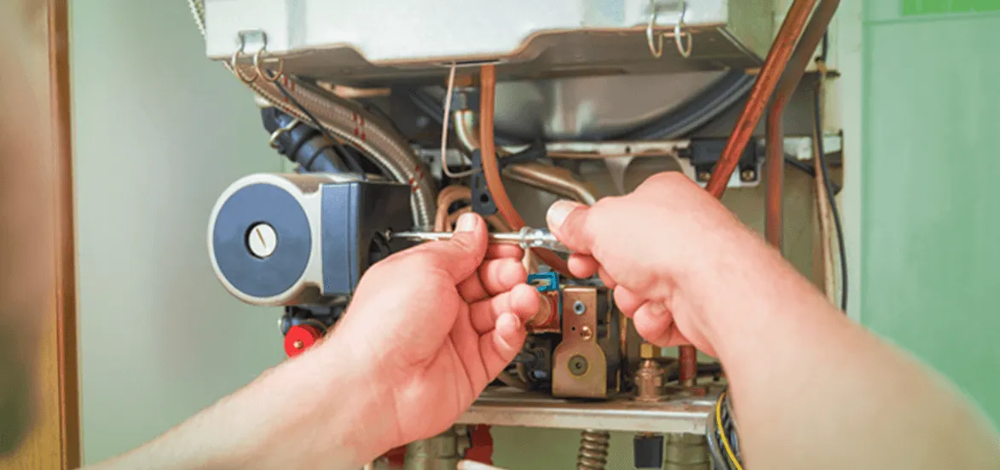

How Can I Reduce The Consumption of My Water Heater?

Unarguably, it is true that everyone needs warm water for some purpose in their day-to-day life. After the introduction of innovative technology like water heaters and geysers, they have become a necessity of every household. It sounds so convenient to heat water quickly at dispense.
But these innovations can pinch in our pockets as they can raise the electricity bill if you fail to call water heater maintenance services to upkeep your system. Guess most of you are already aware of the fact that regular water heater services can contribute to saving around 20% of your electricity bill in Los Angeles.
Anything which can be done to reduce the household's energy usage can bring positive changes in the bills. Keeping this in mind, here are a few tips listed below that you can follow to reduce the consumption of water heaters.
Tips To Reduce The Consumption Of Water Heaters
Shower Over Hot Water Baths
Starting with the first tip, which you may follow to reduce the consumption of a water heater, is this. It is very common to find that people have the habit of filling up water to the brim of buckets and bathtubs. This is seen as nothing but wastage of water and energy.
However, to avoid this habit, it is recommended to take a shower instead. For instance, people who like to shower under a continuous warm water supply end up wasting both water and electricity.
While, on the other hand, reducing the time in the shower will help to save both water and electricity, which was required to fill the bathtub or bucket.
Besides that, it is recommended to turn off the shower when not required. Make sure to turn it off when applying shampoo or soap. Undoubtedly, you would be amazed after seeing the changes in the electricity bills.
Fix The Water Heater
Sometimes the hidden culprit can be the water heater itself. So if you think that nothing is working in your favor, then try to seek a service provider for water heater maintenance in Los Angeles like EZ Heat and Air. The service provider will identify the problem and fix it so that you can save your money.
They also educate their clients regarding water heater maintenance in Los Angeles so that future problems can be avoided.
Moreover, it would be better to replace your water heater if it is not so advanced. Go for good quality and a branded one which features high ratings.
Besides that, installing solar water heaters is also a good idea to hold your wallet tightly.
Low Flow Fixtures And Leakages
Everyone is aware of the fact that the water flow should always be speedy enough so that no one has to wait longer than needed to fill the buckets. But what would you do if the water flow is low?
Many people don't understand that the low flow of water can be the reason behind the wastage of time and high electricity bills. This is why it is recommended to consult with professional water heater maintenance services.
When you fix the low flow, it can save electricity, water, and money. On the other hand, when taps connected to the heater start to leak, they can also result in the same wastage.
However, if you notice any such problems, then make sure to contact us, a trusted provider of water heater services in Los Angeles. The leading team of experts would not just identify the root of the problem but will also offer proper solutions.
Lower The Thermostat
Another way through which you can reduce the electricity bills that come from the water heater is by lowering the thermostat. Usually, many manufacturers are seen to set the thermostat at 140° F while the households are mostly comfortable with 120°F.
So once you have made the adjustments, try to take a shower after that. This is a proven technique not only to curtail the water utility bills but also for reducing corrosion build-up in the pipes.
Therefore, if you have already encountered the problem of mineral build-up or corrosion, then try to seek help from a renowned water heater service in Los Angeles like EZ Heat and Air. They will suggest to you the best ways to get rid of the problem in no time and will take care of your water heating system and other plumbing-related problems.
Insulate Storage Tank And Pipes
You can also try to insulate the storage tanks as it has proven to help reduce heat loss problems. It also prevents the unit from turning on frequently.
So make sure to follow the recommendation of the manufacturer that does not cover the heater's thermostat, burner, top, and bottom.
In order to insulate your tank, you can contact us to avail the best water heater maintenance services in your locality. Besides that, insulating the pipes can also bring positive results.
Hence, you can insulate the first six feet of both hot and cold water pipes that are connected to the unit. It will help in preventing accidents like fire hazards and conserve the system as well - such that there would not be an urge to reheat it.
This process can also be done precisely with the help of our water heater maintenance services. Our team of experts has great experience and is aware of the latest technologies. With their help, you can expect to get quick relief from huge losses coming from paying water bills.
Replace Old Appliances
If the water heater you are using was bought about 10 years ago, replacing them can help you save a lot of cash. Usually, any technology before ten years was not so advanced and energy-efficient.
However, not just the water heater but appliances like old dishwashers or washing machines can contribute to high electricity bills.
So make sure to replace them with something that saves energy and is advanced. There are probably many new designs available in the market today, which consume less water than those models compared to ten years ago.
Install Timer
Like it has been said, the water heaters bought ten years ago usually lack advanced features. So if you have a water heater bought back then, it is important to know that it always keeps running. This clearly indicates that you are wasting electricity the most.
Moreover, it is recommended to install a timer seeking help from the experienced water heater services of Los Angeles.
This will help to turn off the heater at night and save a lot of money, which you may have to pay for the utility bills. With the trusted provider of water heater maintenance in Los Angeles, you would get a free consultation.
Our professional plumbers will come to your residence and offer the best solution to subdue your issue whenever needed. They'll inspect the issue first and guide you about the problems and their solutions. After that, they will carry on water heater repair work.
Drain The Tank
It is considered good practice to drain the water heater annually. This is because draining the water would remove the sediment, which impedes the heat transfer.
Also, this will help in saving electricity. Moreover, it is one of the easiest processes.
But if you find any difficulty in doing it, you can seek help from a professional water heater maintenance service provider in Los Angeles.
Turn Off The Water Heater When Not Required
It makes no sense to keep the water heater running when no one is at home. But still, people have the habit of doing it, because they don't remember small things all the time. They may miss it, right.
If no one is going to be at home for a few days, then it is better to turn off the water heater. But if you don't want to turn it off completely, then turning the thermostat down can also help.
Repair Faucets
Sometimes the problem is not only with your heater; even the faucets are the hidden culprits and lead to wastage of both time and money.
So make sure to check for leaks in faucets and repair them immediately.
Try to contact an experienced water heater maintenance service provider in Los Angeles. Having a professional like us by your side means you would get your problems solved at affordable rates, without any hassle.
Why Is Regular Water Heater Maintenance Vital?
Water is a God gifted luxury that everyone needs for survival. Probably most of us take it for granted but eventually pay for it too in the form of bills.
However, if you use a water heater, you must be thinking about why it needs maintenance so badly. Well to let you know, here are some of the reasons that showcase the needs.
Increase Efficiency
It is very common for water heaters to have calcium build-up inside them, which makes the water heater less efficient.
In other words, the build-up minerals settling on the bottom of the water heater makes it difficult to heat water. This is why flushing and maintaining a water heater is crucial to increase efficiency.
Moreover, it is recommended to consult with professional water heater maintenance services to get assistance for cleaning at reasonable rates.
Saves Bucks
Regular flushing and water heater repair services will lead to saving a lot of money. However, with this, your water heater functions properly, and it heats up quickly as you always wanted it to.
So make sure to consult with a renowned service provider to get maintenance services in a hassle-free way. Not to mention, this will also promote the lifecycle of the water heater.
Identification Of Repairs
Besides removing excess sediment from the system, regular maintenance helps in identifying the repairs in the early stage. When professionals are hired, they will help in fulfilling the water heater repair needs. This can help to avoid the system breakdown, which you may face in the future.
No Surprises
Every good thing tears after a certain period once it is left ignored; however, taking regular water heater services in Los Angeles from a trusted company will help in preventing damage of any kind.
It will help in avoiding surprises like cold shower problems or sudden breakage of the water heater itself. Furthermore, it will promote the durability of the appliance more than expected.
Schedule Your Water Heater Maintenance Service In Los Angeles today!!
If your electricity bills are emptying your wallet, then it is time to take a look at your water heater. The increasing costs of the resources have made people look to cut down their expenses when it comes to running the household at low cost.
Moreover, regular maintenance and service from a trusted water heater maintenance service provider in Los Angeles can bring positive results to your household.
With the help of the professionals, you would get improved system efficiency, better performance, and longevity, which you desire, and it will provide you with a stress-free life altogether.